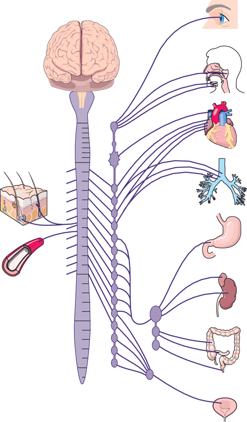
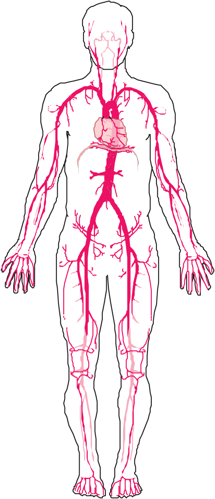
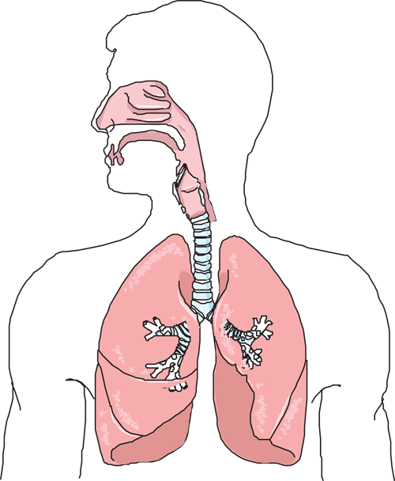
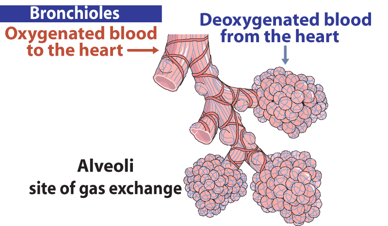
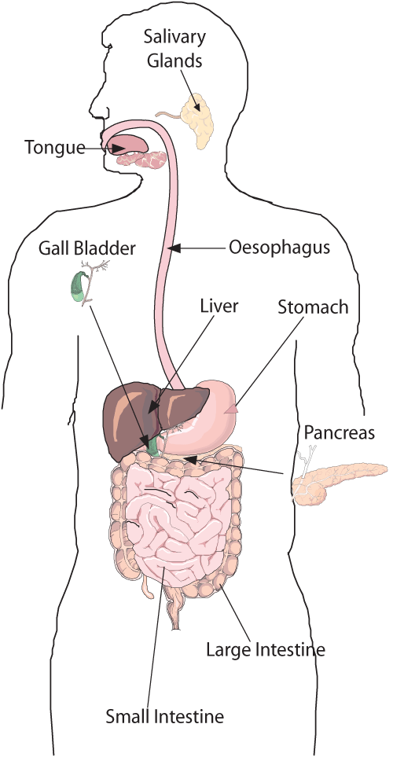
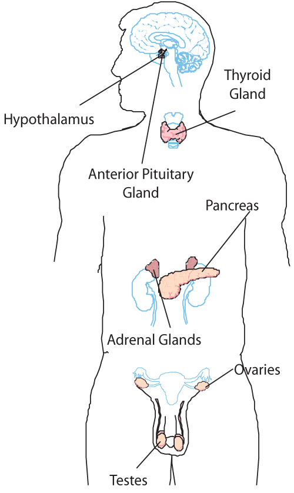
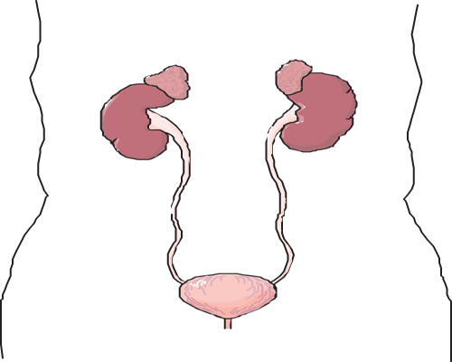
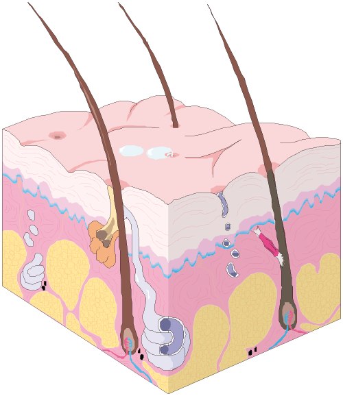

The Human Body
The Human Body
The human body is composed of a number of 'systems', each with a specific role in the function of the body as a whole.
It is useful for a first aider to have a basic awareness of the major systems and their functions. Knowledge of human anatomy will assist you in a first aid diagnosis, and will also provide a firm basis for the care and treatment of a casualty.
Essentially, there are ten anatomical systems, with some more important than others. This section will address those systems that are of significance in first aid delivery.
The nervous system
The nervous system is considered in two main parts, the Central Nervous System and the Peripheral Nervous System.
The Central Nervous System comprises the brain and spinal cord. The brain controls all functions of the body, and is the most complex of all body systems. The brain regulates all body functions, including the respiratory and cardiovascular systems. The spinal cord delivers the signals to all parts of the body.
The motor and sensory nerves, which involve movement, are known as the Peripheral Nervous System, and these are directed by the brain. Some peripheral nerves function without conscious thought, and these are known as autonomic nerves. Breathing is a function that is attributable to these nerves.
The cardiovascular system
This system involves the heart, blood vessels and blood. The heart is the pump that drives the blood around the body.
The body's main vessels are arteries, which take the blood from the heart, and veins, which return the blood to the heart.
There are smaller blood vessels such as arterioles, venules and capillaries, most of which are located at the body's extremities and usually close to the skin.
Blood is the medium that transports oxygen, from the respiratory system to the body's cells. Blood also transports sugars, chemicals, proteins, hormones, and many other substances around the body for use and elimination.
As the heart pumps blood, a pulse beat can be felt at various locations in the body, and each pulse beat corresponds to one heartbeat. The heart rate of the average adult at rest is between 60 to 100 beats per minute, depending on age, medical conditions and general fitness.
The respiratory system
This system is composed of the airway (mouth, nose, trachea, larynx, bronchi, and bronchioles) and the lungs (including the small air sacs called alveoli).
The respiratory system provides Oxygen to the blood, and takes away the waste product called Carbon Dioxide.
Oxygen is extracted from the air that is inhaled through the airway, and goes into the blood stream through the membranes of the lungs. For the first aider, maintaining a casualty's airway is of primary importance.

 The musculoskeletal system
The musculoskeletal system
This system involves the bones, ligaments, tendons and muscles which support the body, protect the internal organs, and enable movement.
Most muscles used for movement work by contracting and relaxing in conjunction with a bone.
The action of raising your leg involves contracting several muscles, creating an opposing force in the leg, causing it to move upwards.
Some muscles, such as the diaphragm that makes the lungs expand and contract, do not need bones to work with, but function attached to large masses of tissue.
The digestive system
This system includes the oesophagus, stomach and intestines.
Fluid and solids are passed through the oesophagus to the stomach where they are processed for further digestion. They are then absorbed into the body through the membranes of the intestines.
Some organs, such as the liver and pancreas, are considered accessories to the digestive system as they help process food into various chemical substances used by the body.
The endocrine system
This system involves those organs and glands that secrete chemicals in the form of hormones to stimulate and activate the body's functions.
The pancreas for example, controls a variety of important functions by releasing insulin, and influencing the body's metabolic process.
The urinary system
This is an important system that flushes waste products suspended in fluid from the body.
It includes the kidneys, bladder and urinary tract, and plays a vital role in keeping the body healthy.
Should the urinary system fail (especially the kidneys), then the affected person requires external assistance to get rid of the waste products by 'flushing' the blood. This is called haemodialysis or, more commonly, 'dialysis'.
The reproductive system
This is linked to the body's endocrine system, through the female's ovaries and the male's testes. These are known as the gonads, or 'sex glands'.
The female reproductive system consists of the ovaries which produce the human egg, the uterus (or 'womb') where the fertilised egg is lodged for growth, and the vagina.
The male reproductive system is composed of the testes, which produce sperm, the seminal vesicle that provides the fluid medium for the sperm, and the penis.
The integumentary system
This is the system that includes skin, hair, fingernails and toenails. Their pigmentation (colour) and growth are linked to the endocrine system.
The skin is the body's largest organ, and plays an important role in protecting the body from infections. The skin's other functions include acting as a shield against injury and keeping body fluids in. The skin is made from tough, elastic fibres which have the ability to stretch without tearing easily.
The lymphatic system
The lymphatic system is a slow moving system where toxins such as venom tend to accumulate after the bite has occurred.
This system provides lymphatic fluid that drains from the body's tissues, which is important as a 'flushing' mechanism, and most toxins and infections absorbed or injected into the tissues are collected by the lymphatic system and 'strained' through lymph nodes in the armpits, neck and groin. The lymphatic fluid eventually drains into the blood stream.